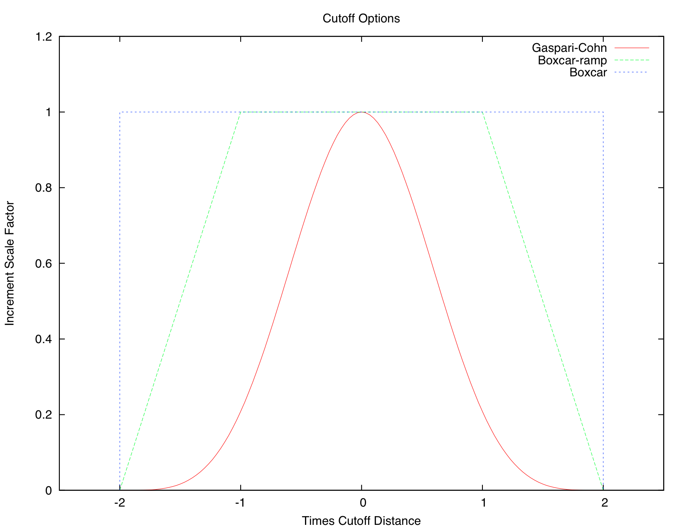

Jump to DART Documentation Main Index
version information for this file:
$Id$
|
|
Jump to DART Documentation Main Index |
This module provides subroutines that implement the parallel versions of the sequential scalar filter algorithms. These include the standard sequential filter as described in Anderson 2001, 2003 along with systematic correction algorithms for both mean and spread. In addition, algorithms to do a variety of flavors of filters including the EAKF, ENKF, particle filter, and kernel filters are included. The parallel implementation that allows each observation to update all state variables that are close to it at the same time is described in Anderson and Collins, 2007.
Available observation space filter types include:
We recommend using type=1, the EAKF. Note that although the algorithm is expressed in a slightly different form, the EAKF is identical to the EnSRF (Ensemble Square Root Filter) described by Whitaker and Hamill in 2002.
Localization controls how far the impact of an observation extends. The namelist items related to localization are spread over several different individual namelists, so we have made a single collected description of them here along with some guidance on setting the values.
This discussion centers on the mechanics of how you control localization in DART with the namelist items, and a little bit about pragmatic approaches to picking the values. There is no discussion about the theory behind localization - contact Jeff Anderson for more details. Additionally, the discussion here applies specifically to models using the 3d-sphere location module. The same process takes place in 1d models but the details of the location module namelist is different.
The following namelist items related to 3d-sphere localization are all found in the input.nml file:
|

Click image for larger version. |
There are a large set of options for localization. Individual cases may differ but in general the following guidelines might help. Most users use the Gaspari-Cohn covariance cutoff type. The value of the cutoff itself is the item most often changed in a sensitivity run to pick a good general value, and then left as-is for subsequent runs. Most localize in the vertical, but tend to use large values so as to not disturb vertical structures. Users do not generally use adaptive localization, unless their observations are very dense in some areas and sparse in others.
The advice for setting good values for the cutoff value is to err on the larger side - to estimate for all types of observations under all conditions what the farthest feasible impact or correlated structure size would be. The downsides of guessing too large are 1) run time is slower, and 2) there can be spurious correlations between state vector items and observations which aren't physically related and noise can creep into the assimilation results this way. The downside of guessing too small is that state vector items that should get an impact from an observation won't. This might disrupt organized features in a field and the model may take more time to recover/reconstruct the feature.
This namelist is read from the file input.nml. Namelists start with an ampersand '&' and terminate with a slash '/'. Character strings that contain a '/' must be enclosed in quotes to prevent them from prematurely terminating the namelist.
&assim_tools_nml filter_kind = 1, cutoff = 0.2, sort_obs_inc = .false., spread_restoration = .false., sampling_error_correction = .false., adaptive_localization_threshold = -1, adaptive_cutoff_floor = -1.0, output_localization_diagnostics = .false., localization_diagnostics_file = "localization_diagnostics", print_every_nth_obs = 0, rectangular_quadrature = .true., gaussian_likelihood_tails = .false., close_obs_caching = .true., allow_missing_in_clm = .false. special_localization_obs_types = "", special_localization_cutoffs = -1, /
| Item | Type | Description |
|---|---|---|
| filter_kind | integer | Selects the variant of filter to be used.
|
| cutoff | real(r8) | Cutoff controls a distance dependent weight that modulates the impact of an observation on a state variable. The units depend both on the location module being used and on the covariance cutoff module options selected. As defined in the original paper, this is the half-width; the localization goes to 0 at 2 times this value. |
| sort_obs_inc | logical | If true, the final increments from obs_increment are sorted so that the mean increment value is as small as possible. This minimizes regression errors when non-deterministic filters or error correction algorithms are applied. HOWEVER, when using deterministic filters (filter_kind == 1 or 8) with no inflation or a combination of a determinstic filter and deterministic inflation (filter_nml:inf_deterministic = .TRUE.) sorting the increments is both unnecessary and expensive. A warning is printed to stdout and the log and the sorting is skipped. |
| spread_restoration | logical | True turns on algorithm to restore amount of spread that would be expected to be lost if underlying obs/state variable correlation were really 0. |
| sampling_error_correction | logical | If true, uses special input files generated by full_error.f90 in the system_simulation directory to reduce errors in the regression step. The files are generated for a specific ensemble size. They have the name "final_full.X" where X is the number of ensemble members, and most common ensemble sizes have precomputed files in that same directory. There is no dependence on which model is being used, only on the number of ensemble members. The input file must exist in the directory where the filter program is executing. |
| adaptive_localization_threshold | integer | Used to reduce the impact of observations in densely observed regions. If the number of observations close to a given observation is greater than the threshold number, the cutoff radius for localization is adjusted to try to make the number of observations close to the given observation be the threshold number. This should be dependent on the location module and is tuned for a three_dimensional spherical implementation for numerical weather prediction models at present. |
| adaptive_cutoff_floor | real | If adaptive localization is enabled and if this value is greater than 0, then the adaptive cutoff distance will be set to a value no smaller than the distance specified here. This guarentees a minimum cutoff value even in regions of very dense observations. |
| output_localization_diagnostics | logical | Setting this to true. will output an additional text file that contains the obs key, the obs time, the obs location, the cutoff distance and the number of other obs which are within that radius. If adaptive localization is enabled, the output also contains the updated cutoff distance and the number of other obs within that new radius. Without adaptive localization there will be a text line for each observation, so this file could get very large. With adaptive localization enabled, there will only be one line per observation where the radius is changed, so the size of the file will depend on the number of changed cutoffs. |
| localization_diagnostics_file | character(len=129) | Filename for the localization diagnostics information. This file will be opened in append mode, so new information will be written at the end of any existing data. |
| special_localization_obs_types | character(len=32), dimension(:) | Optional list of observation types (e.g. "RADAR_REFLECTIVITY", "RADIOSONDE_TEMPERATURE") which will use a different cutoff value other than the default specified by the 'cutoff' namelist. This is only implemented for the 'threed_sphere' locations module. |
| special_localization_cutoffs | real(r8), dimension(:) | Optional list of real values which must be the same length and in the same order as the observation types list given for the 'special_localization_obs_types' item. These values will set a different cutoff distance for localization based on the type of the observation currently being assimilated. Any observation type not in the list will use the default cutoff value. This is only implemented for the 'threed_sphere' locations module. |
| print_every_nth_obs | integer | If set to a value N greater than 0, the observation assimilation loop prints out a progress message every Nth observations. This can be useful to estimate the expected run time for a large observation file, or to verify progress is being made in cases with suspected problems. |
| close_obs_caching | logical | Should remain .TRUE. unless you are using specialized_localization_cutoffs. In that case to get accurate results, set it to .FALSE.. This also needs to be .FALSE. if you have a get_close_obs() routine in your model_mod file that uses the types/kinds of the obs to adjust the distances. |
| allow_missing_in_clm | logical | If true, missing values (MISSING_R8 as defined in the types_mod.f90 file) are allowed in the state vector. Model interpolation routines must be written to recognize this value and fail the interpolation. During assimilation any state vector items where one or more of the ensemble members are missing will be skipped and their values will be unchanged by the assimilation. The system currently has limited support for this option; the CLM model has been tested and is known to work. Other users with models which would benefit from setting missing values in the state vector are encouraged to contact dart at ucar.edu. |
types_mod utilities_mod sort_mod random_seq_mod obs_sequence_mod obs_def_mod cov_cutoff_mod reg_factor_mod location_mod (model dependent choice) ensemble_manager_mod mpi_utilities_mod adaptive_inflate_mod time_manager_mod assim_model_mod
| use assim_tools_mod, only : | filter_assim |
A note about documentation style. Optional arguments are enclosed in brackets [like this].
type(ensemble_type), intent(inout) :: ens_handle type(ensemble_type), intent(inout) :: obs_ens_handle type(obs_sequence_type), intent(in) :: obs_seq integer, intent(in) :: keys(:) integer, intent(in) :: ens_size integer, intent(in) :: num_groups integer, intent(in) :: obs_val_index type(adaptive_inflate_type), intent(inout) :: inflate integer, intent(in) :: ens_mean_copy integer, intent(in) :: ens_sd_copy integer, intent(in) :: ens_inf_copy integer, intent(in) :: ens_inf_sd_copy integer, intent(in) :: obs_key_copy integer, intent(in) :: obs_global_qc_copy integer, intent(in) :: obs_prior_mean_start integer, intent(in) :: obs_prior_mean_end integer, intent(in) :: obs_prior_var_start integer, intent(in) :: obs_prior_var_end logical, intent(in) :: inflate_only
Does assimilation and inflation for a set of observations that is identified by having integer indices listed in keys. Only the inflation is updated if inflation_only is true, otherwise the state is also updated.
| ens_handle | Contains state variable ensemble data and description. |
| obs_ens_handle | Contains observation prior variable ensemble and description. |
| obs_seq | Contains the observation sequence including observed values and error variances. |
| keys | A list of integer indices of observations in obs_seq that are to be used at this time. |
| ens_size | Number of ensemble members in state and observation prior ensembles. |
| num_groups | Number of groups being used in assimilation. |
| obs_val_index | Integer index of copy in obs_seq that contains the observed value from instrument. |
| inflate | Contains inflation values and all information about inflation to be used. |
| ens_mean_copy | Index of copy containing ensemble mean in ens_handle. |
| ens_sd_copy | Index of copy containing ensemble standard deviation in ens_handle. |
| ens_inf_copy | Index of copy containing state space inflation in ens_handle. |
| ens_inf_sd_copy | Index of copy containing state space inflation standard deviation in ens_handle. |
| obs_key_copy | Index of copy containing unique key for observation in obs_ens_handle. |
| obs_global_qc_copy | Index of copy containing global quality control value in obs_ens_handle. |
| obs_prior_mean_start | Index of copy containing first group's prior mean in obs_ens_handle. |
| obs_prior_mean_end | Index of copy containing last group's prior mean in obs_ens_handle. |
| obs_prior_var_start | Index of copy containing first group's ensemble variance in obs_ens_handle. |
| obs_prior_var_end | Index of copy containing last group's ensemble variance in obs_ens_handle. |
| inflate_only | True if only inflation is to be updated, and not state. |
| filename | purpose |
|---|---|
| input.nml | to read assim_tools_nml |
| Routine | Message | Comment |
|---|---|---|
| assim_tools_init | cant combine spread_restoration and filter_kind ### | Spread restoration only compatible with filter_kind 1 |
| obs_increment | Illegal value of filter_kind in assim_tools namelist [1-8 OK] | Only 1-4,8 currently supported. |
| obs_increment_eakf obs_increment_ran_kf obs_increment_det_kf |
Both obs_var and prior_var are zero. This is inconsistent | Product of two delta functions doesn't work. |
| get_correction_from_file | Use less than 10000 ensemble | File only works up to 9999 members. |
| get_correction_from_file | Correction file ______ does not exist. | Couldn't find the correction file in the working directory. |
The current version of the systematic error correction algorithm does not work in a logical fashion with the parallel region assimilation feature.
none at this time
N/A
DART software - Copyright 2004 - 2013 UCAR.
This open source software is provided by UCAR, "as is",
without charge, subject to all terms of use at
http://www.image.ucar.edu/DAReS/DART/DART_download
| Contact: | DART core group |
| Revision: | $Revision$ |
| Source: | $URL$ |
| Change Date: | $Date$ |
| Change history: | try "svn log" or "svn diff" |
{kind=link}